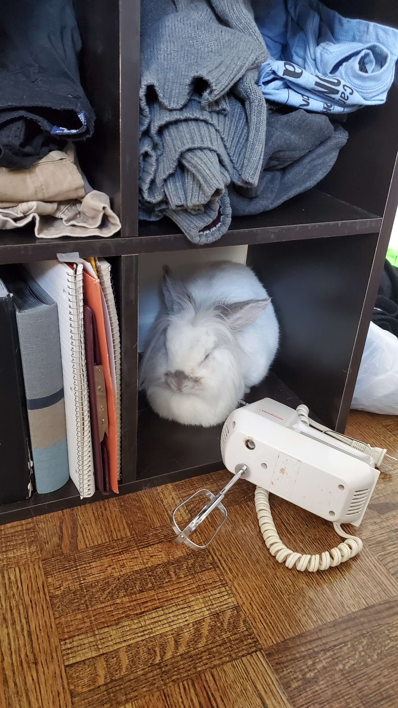

Trixie appreciation page
Trixie was born and raised in Kitchener and then moved to Corinth in 2018 at the age of about 3. She moved again in 2020 to Mississauga for a few months then again to Fenwick for 3 month stint. She had the best time of her life when she moved Toronto and got a two floor apartment with an access door so she could run around the floor whenever it was open. She then took the trip of a lifetime and hated every minute of the 11 hour drive to Brooklyn from Toronto. But she’s been happy and healthy here to date where her main hobby is chewing on the couch.


Go to home